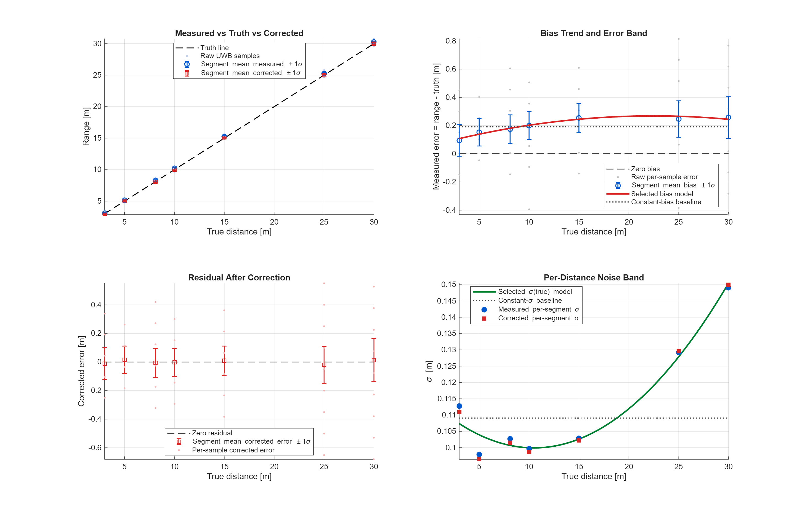

Caterpillar rotations
Structural/thermal simulation, then embedded controls in Caterpillar Technology.
Virginia Tech Aerospace Engineering · GNC concentration · GPA 3.85
Controls, estimation, and embedded autonomy for vehicles that have to work outside the demo.
Recruiter scan
Structural/thermal simulation, then embedded controls in Caterpillar Technology.
DWM1001C collaborative-navigation tests extended practical range from roughly 31 m.
Piecewise UWB correction reduced cross-validation MAE from 0.110 m.
Avionics/programming lead on GoAERO @ Virginia Tech.
Positioning
My strongest work sits where sensors, dynamics, embedded constraints, and verification meet: wheel-speed and machine-state estimation for vehicle control, inter-vehicle UWB ranging for GNSS-degraded navigation, and flight-control testbeds that expose controller behavior before flight.
Featured work
Each project card gives the problem, my role, the technical stack, and the result or next validation step.
Collaborative navigation research
Developing UWB cross-links for cooperative vehicle localization with Qorvo/Decawave DWM1001C hardware, custom single-sided two-way ranging firmware, calibration models, and future Kalman-filter integration.

Controls testbed
Undergraduate research with Dr. L'Afflitto on a NAVAIR-funded thrust-stand system for small UAVs, integrating Pixhawk 6C, Odroid M1S, ROS 2 Galactic, Dynamixel actuation, and MATLAB genetic-algorithm workflows for inner-loop tuning.


Embedded vehicle controls
Building modular Simulink control models for traction control, ABS, and VSA workflows: wheel-speed target generation, error conventions, machine-state estimator interfaces, filters, Dynasty plant validation, and embedded C feasibility testing.
See Caterpillar experience
Autonomous UAV
Built a quadrotor around Jetson Nano, Intel RealSense D455, Python/OpenCV, MAVSDK, and SITL/HITL validation for obstacle avoidance, target tracking, and flight-control integration.
Read UAV case studyEngineering history
Model-based vehicle controls in Simulink with production-code constraints: modular wheel-speed generation, sensing integration across IMU and wheel-speed rates, filter/error convention work, Dynasty plant testing, and Simulink-generated C for early ECM timing checks.
UWB ranging and relative-pose work for GNSS-degraded navigation, including anchor/tag network configuration, range logging, calibration, anomaly analysis, and estimator-ready measurement modeling.
Undergraduate research on the NAVAIR-funded three-DOF thrust-stand testbed, GA controller tuning workflow, ROS 2 + Dynamixel integration, Pixhawk/Odroid hardware work, IMU signal processing, and AirTalent Symposium presentation.
Structural, thermal, and CFD simulation support for cooling systems; NX Nastran workflow development and comparison against legacy solver workflows for heavy-equipment components.
Led avionics/software integration for a rescue UAV concept, defining ROS 2 messaging, flight-stack interfaces, sensor integration, onboard compute plans, and SITL/HITL validation steps.
Technical stack
Current build direction
Move from cleaned ranging streams to measurement models that can be fused with inertial and vehicle-motion dynamics.
Keep traction, braking, and stability control components reusable across brake, clutch, and electric-motor actuation paths.
Prototype Claude-to-Simulink workflows for navigating, organizing, and inspecting model artifacts without hiding engineering assumptions.
2027 internship cycle
Best-fit teams: positioning, GNC, embedded controls, robotics simulation, flight software, AV/ADAS, defense autonomy, and sensor-fusion validation.